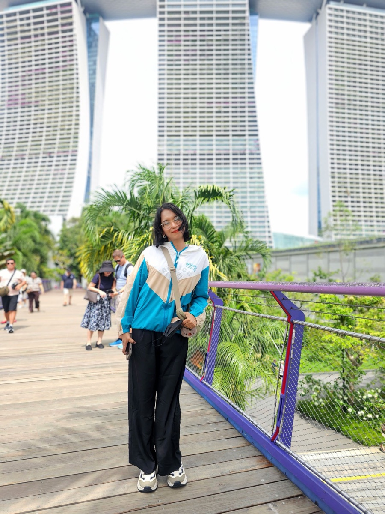

About
Hi, I'm Dhanushka Liyanage — a designer who likes the hard part.
The hard part being the fuzzy front end: figuring out what's actually worth building before a single screen gets drawn.

I'm a Lead UX Designer with 5+ years designing scalable, user-centered solutions for complex B2B and enterprise SaaS platforms. I'm currently an Associate Lead UX Designer at Rootcode, where I own the Skapp design system. Before that, I spent four years leading UX for IFS Cloud, IFS's global enterprise platform — the work behind the search relocation, Smart Editor, date filter, timezone and keyboard accessibility case studies on this site.
I care about the whole arc of a product: the research that frames it, the systems that keep it consistent as it grows, and the interface details that make it feel considered rather than assembled.
How I work
I start by getting specific about the problem rather than trusting a single number — the date filter redesign on this site began with five independent kinds of evidence, not one, and only moved to design once they agreed with each other. I design for systems, not screens: five different ways a date could carry a timezone had to resolve to one consistent model at IFS Cloud, and Skapp's component library only holds together because of the token architecture underneath it. And I stay close to engineering through the build — I read and write enough HTML, CSS and component-based UI to review an implementation against spec, not just against a mockup.
AI is a growing part of that work. At Rootcode I design for model outputs, uncertainty, transparency and human oversight directly — the same territory Smart Editor, an AI writing assistant I led for IFS Cloud, first put me in.
Background
- Associate Lead UX Designer, Rootcode Pvt Ltd — 2025–Present
- Senior User Experience Designer, IFS R&D (Pvt) Ltd — 2021–2025
- Senior Executive, Solution Engineer, Dialog Axiata PLC — 2020–2021
- Product Owner / Pre-sale Engineer, Wavenet (Pvt) Ltd — 2018–2021
The first two years weren't design roles at all — solution architecture and pre-sales engineering, translating client requirements into technical proposals. That's where the engineering fluency actually comes from, not a bootcamp.
Education
- M.Sc. by Research, XR Design and User Behavior — emotions and bodily interaction. University of Moratuwa, Sri Lanka — 2024–2026
- BSc (Hons), Information Technology & Management, University of Moratuwa, Sri Lanka — 2014–2018
Beyond the case studies
Not everything makes it into a full write-up. A few from the last few years:
- Cut task completion time by roughly 30% across a set of IFS Cloud module redesigns, alongside a measurable lift in user satisfaction scores.
- Mentored a design intern who progressed into a full-time role and went on to contribute to three enterprise product features.
- Led a cross-functional accessibility initiative that improved WCAG compliance across major platform components — the unglamorous work that doesn't show up in a portfolio but shows up for users who need it. The keyboard navigation case study is one piece of it.
Tools
Figma for design and design systems; HTML, CSS and JS for prototyping — this site is hand-built, no framework, no template. Dovetail for research synthesis, Jira for tracking work alongside engineering.
Certifications & continued learning
UX Design Professional Certificate (Coursera, 2023); Introduction to AI for Designers (Udemy, 2024); IBM Design Co-creator. The M.Sc. above is the bigger commitment — the kind of question about how people move and feel in XR space that doesn't come up in a typical sprint, which is exactly why I wanted to sit with it properly.
Good design is a decision you can defend, made visible.
Let's talk
I'm currently focused on Rootcode's work, but always happy to trade notes on product design, design systems, or AI-assisted UX.